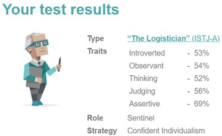
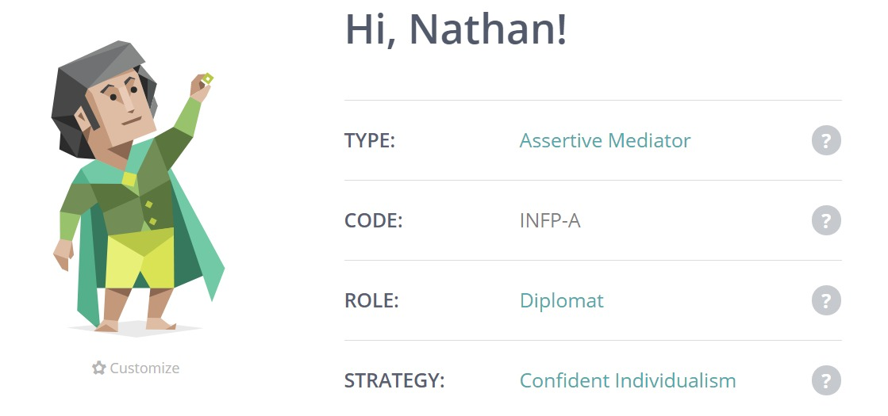
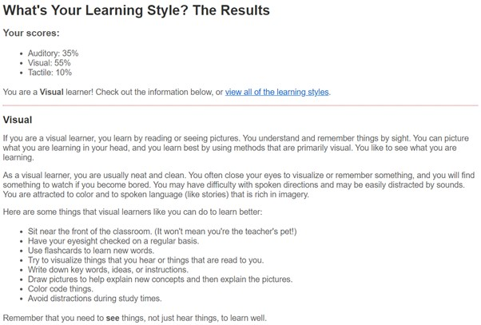
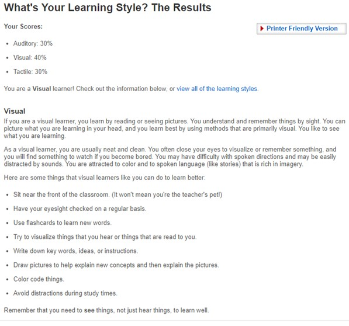
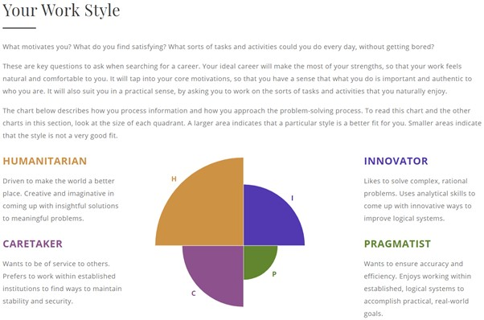
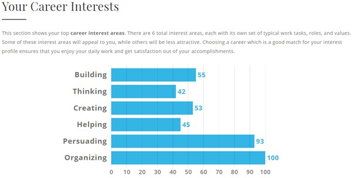
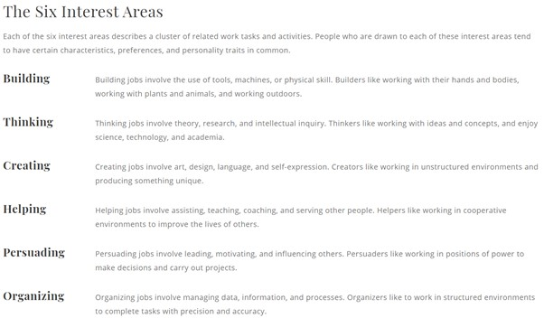

Team Profile
Each member has taken a personality test, an online learning test, and another test of their choosing. The tests aims to help them explore their personality and learning style, the results are presented below.
16 Personality test
Naufal's Myers-Briggs test result:
Test link: https://www.16personalities.com/free-personality-test
After taking the Myers-Briggs test, I got the following result: INTP-T Logician.

Key points of my personality according to the test are:
- - Introverted: Prefers solitary activities and get exhausted by social interaction.
- - Intuitive: Intuitive individuals are very imaginative, open-minded and curious.
- - Thinking: Thinking individuals focus on objectivity and rationality, prioritizing logic over emotions.
- - Prospecting: Prospecting individuals are very good at improvising and spotting opportunities.
- - Turbulent: Likely to experience a wide range of emotions and to be success-driven, perfectionistic and eager to improve.
They do have good points that I mostly agree upon such as introverted and intuitive. However, some others I have difficulties relating to such as brain driven decision making. I tend to be rational of course, but I believe that I am more emotional than how the result make it seem.
But again, it is an online test (not a more precise personal test) so safe to say that it is pretty good for what it is.
Kohei's Myers-Briggs test result:
16Personalities
Nathan's Myers-Briggs test result:
Rodney's Myers-Briggs test result:
Online learnig style test
Naufal's Online learnig style result:
Test link: http://www.educationplanner.org/students/self-assessments/learning-styles-quiz.shtml
After taking an online test aimed to find one's best learning style, here is the result:
- Auditory: 10%
- Visual: 55%
- Tactile: 35%
Kohei's Online learnig style result:
Online learning test: EducationPlanner.org
Nathan's Online learnig style result:
Rodney's Online learnig style result:
Other tests:
Naufal: The big 5 personality Test
Test link: https://www.truity.com/test/big-five-personality-test
The test would give a rating based on 5 aspects abbreviated OCEAN: Openness, Conscientiousness, Extraversion, Agreeableness, and Neuroticism. Here is the result of my test:
- O -> 73%
- C -> 54%
- E -> 27%
- A -> 67%
- N -> 73%
To summarize briefly, according to this test my Openness score is very high which means that I tend to be more creative and imaginative than other that have taken the test. Similarly, to Myers-Briggs test, I am more reserved/less extroverted than most people which means I have to put effort to maintain a good communication with others, which is very important especially in a group.
Kohei's result:
Career Personality Profiler by Truity

